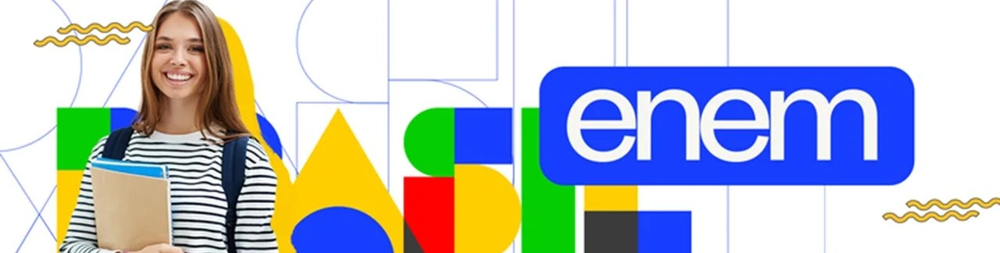

Este site faz parte de um projeto desenvolvido para a disciplina de Projeto Integrador (PI), realizado por nós, estudantes do Ensino Médio do Instituto Federal de Santa Catarina (IFSC) – Campus Garopaba. O projeto surgiu a partir da ideia de criar uma ferramenta que pudesse contribuir para a educação e, principalmente, facilitar o acesso à preparação para o Exame Nacional do Ensino Médio (ENEM).
Sabemos que a preparação para o ENEM pode ser desafiadora e que nem todos os estudantes possuem acesso a cursos preparatórios, materiais de estudo ou plataformas pagas. Pensando nisso, desenvolvemos esta plataforma com o objetivo de oferecer um ambiente gratuito, acessível e prático, no qual estudantes possam estudar de acordo com suas necessidades e no seu próprio ritmo.

Este projeto representa, portanto, não apenas uma atividade acadêmica, mas também uma oportunidade de utilizarmos os conhecimentos adquiridos ao longo do Ensino Médio para desenvolver uma solução que possa ser útil para outros estudantes.
Seja bem-vindo à nossa plataforma. Esperamos que ela possa fazer parte da sua preparação e ajudar você a alcançar seus objetivos!